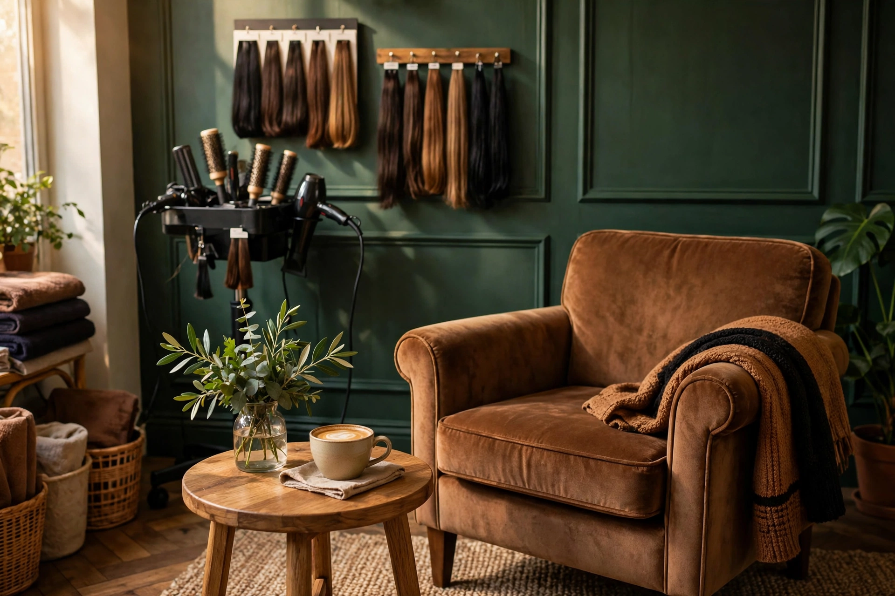

Protocolo sanitário máximo
Esterilização de materiais
Autoclave e embalagens individuais para cada serviço de manicure e pedicure. Lixas e palitos descartáveis, sempre.
Mural transparente • Depoimentos identificadosPolítica zero fake reviews
Construímos nossa reputação em Campinas corte a corte, atendimento a atendimento. Sem métricas infladas, sem depoimento comprado — só a palavra de quem sentou na nossa cadeira.
Este é o novo canal digital do Wasco's Cabelos. Nossas avaliações históricas foram colhidas presencialmente no salão e ainda estão sendo organizadas para este mural. Campinas • SP.
Mural em construção
Este mural ainda está vazio porque estamos reunindo os depoimentos reais dos nossos clientes. Se você já foi atendido aqui, sua opinião é a primeira que queremos publicar — com seu nome e o serviço que você fez.
Enviar minha avaliação pelo WhatsApp ↗ Agendar um horário →Mensagem pré-formatada. Envie texto, foto do cabelo ou áudio para nossa equipe. Privacidade preservada — publicamos apenas com a sua autorização.

Canal de escuta ativa
Sua opinião direta molda o padrão do Wasco's Cabelos. Seja um elogio, uma sugestão técnica de acabamento ou um ponto a melhorar — a gente lê tudo e responde pessoalmente.
Enviar minha avaliação pelo WhatsApp ↗Privacidade preservada • Unidade Campinas
Rigor técnico • Protocolos de bancada
Não dependemos de sorte. Nossos resultados vêm de método, assepsia estrita e respeito à integridade do seu fio.
Protocolo sanitário máximo
Autoclave e embalagens individuais para cada serviço de manicure e pedicure. Lixas e palitos descartáveis, sempre.
Sem riscos desnecessários
Em processos de descoloração, coloração e química transformadora, avaliamos a resistência real do fio antes de começar.
Tranquilidade pós-atendimento
Se você lavar o cabelo em casa e sentir que precisa de um retoque no encaixe do corte, volte e fale com a gente — ajustamos sem custo adicional de avaliação.